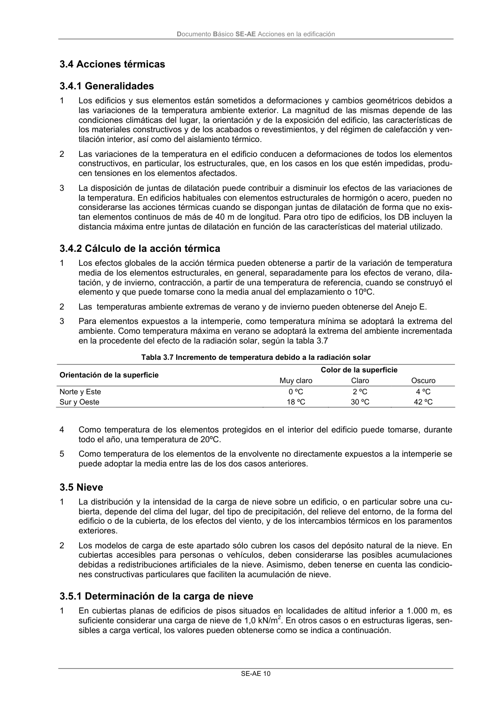

DB-SE-AE Acciones en la edificación · edición 2009-04 · capa oficial
Documento DB-SE-AE-oficial · SHA-256 del PDF 26116e5088955f0c6963a6187270cad282e1e7bf5a53a90f695c8fa50b4e4487
Página física 14 de 46.
Copia fiel del PDF fuente · Fuente oficial
Ficha de la disposición en la fuente oficial
Formato: Texto de la página (Markdown)
Documento Básico SE-AE Acciones en la edificación SE-AE 10 3.4 Acciones térmicas 3.4.1 Generalidades 1 Los edificios y sus elementos están sometidos a deformaciones y cambios geométricos debidos a las variaciones de la temperatura ambiente exterior. La magnitud de las mismas depende de las condiciones climáticas del lugar, la orientación y de la exposición del edificio, las características de los materiales constructivos y de los acabados o revestimientos, y del régimen de calefacción y ven- tilación interior, así como del aislamiento térmico. 2 Las variaciones de la temperatura en el edificio conducen a deformaciones de todos los elementos constructivos, en particular, los estructurales, que, en los casos en los que estén impedidas, produ- cen tensiones en los elementos afectados. 3 La disposición de juntas de dilatación puede contribuir a disminuir los efectos de las variaciones de la temperatura. En edificios habituales con elementos estructurales de hormigón o acero, pueden no considerarse las acciones térmicas cuando se dispongan juntas de dilatación de forma que no exis- tan elementos continuos de más de 40 m de longitud. Para otro tipo de edificios, los DB incluyen la distancia máxima entre juntas de dilatación en función de las características del material utilizado. 3.4.2 Cálculo de la acción térmica 1 Los efectos globales de la acción térmica pueden obtenerse a partir de la variación de temperatura media de los elementos estructurales, en general, separadamente para los efectos de verano, dila- tación, y de invierno, contracción, a partir de una temperatura de referencia, cuando se construyó el elemento y que puede tomarse cono la media anual del emplazamiento o 10ºC. 2 Las temperaturas ambiente extremas de verano y de invierno pueden obtenerse del Anejo E. 3 Para elementos expuestos a la intemperie, como temperatura mínima se adoptará la extrema del ambiente. Como temperatura máxima en verano se adoptará la extrema del ambiente incrementada en la procedente del efecto de la radiación solar, según la tabla 3.7 Tabla 3.7 Incremento de temperatura debido a la radiación solar Color de la superficie Orientación de la superficie Muy claro Claro Oscuro Norte y Este 0 ºC 2 ºC 4 ºC Sur y Oeste 18 ºC 30 ºC 42 ºC 4 Como temperatura de los elementos protegidos en el interior del edificio puede tomarse, durante todo el año, una temperatura de 20ºC. 5 Como temperatura de los elementos de la envolvente no directamente expuestos a la intemperie se puede adoptar la media entre las de los dos casos anteriores. 3.5 Nieve 1 La distribución y la intensidad de la carga de nieve sobre un edificio, o en particular sobre una cu- bierta, depende del clima del lugar, del tipo de precipitación, del relieve del entorno, de la forma del edificio o de la cubierta, de los efectos del viento, y de los intercambios térmicos en los paramentos exteriores. 2 Los modelos de carga de este apartado sólo cubren los casos del depósito natural de la nieve. En cubiertas accesibles para personas o vehículos, deben considerarse las posibles acumulaciones debidas a redistribuciones artificiales de la nieve. Asimismo, deben tenerse en cuenta las condicio- nes constructivas particulares que faciliten la acumulación de nieve. 3.5.1 Determinación de la carga de nieve 1 En cubiertas planas de edificios de pisos situados en localidades de altitud inferior a 1.000 m, es suficiente considerar una carga de nieve de 1,0 kN/m2. En otros casos o en estructuras ligeras, sen- sibles a carga vertical, los valores pueden obtenerse como se indica a continuación.
